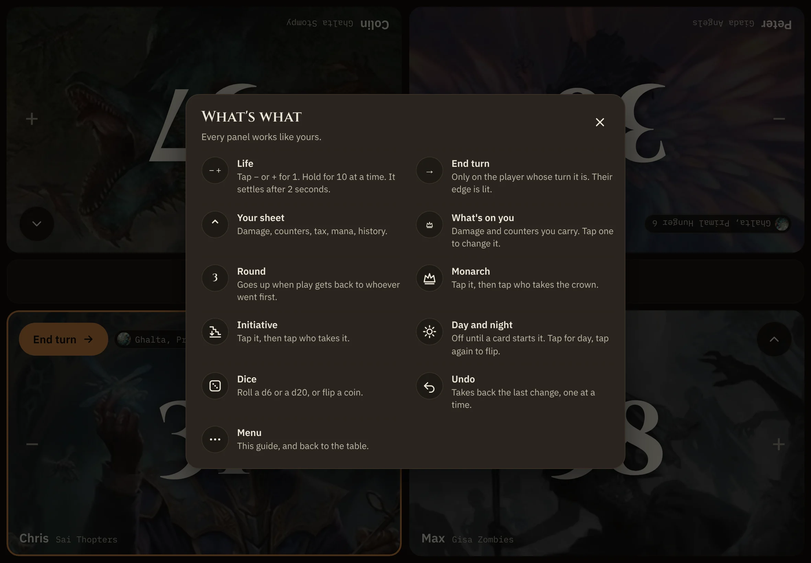

What's what · the life tracker explains itself
Players don't always know what the strip's icons and the panel's controls do. This draws a guide that labels each control where it sits, shown once the first time the tracker opens on a device and kept in the Menu (⋯) after that. Every frame is the shipped tracker rendered in a browser at the real size, with the guide drawn over it. Four seats: you (Chris) play Sai; Colin Ghalta, Peter Giada, Max Gisa.

A · Labels in place (chosen)
The board dims and each control is lit where it sits, with a short label and a line to it. It teaches where a thing is as well as what it does, which a list can't. All at once on one screen, not a stepped tour.

B · A list in a modal (not chosen)
The same eleven lines as an icon key. Easier to build and to scan, but it covers the controls it describes, and an icon in a list doesn't say which panel or button it is on the table. This is the "snippets without context" problem the About reference was redrawn to fix.
1 · In place, over the board
Option A. A 66% scrim over the whole tracker with a cutout around each control, ringed in the halo (2px accent at 75%, 6px at 20%). That is the first-run tour's spotlight (Discovery R3, C4), lighting every stop at once. Each label is the moment bubble's surface (R1, Q1): elevated, 1px strong border, radius 10, the accent diamond, the name in semibold and one line. A 1.5px accent leader ends in a dot on the cutout.
2 · What it labels
All seven strip buttons: Round, Monarch, Initiative, Day and night, Dice, Undo, Menu. On your panel: Life (the − and + halves), End turn when it is on your panel, your sheet (the chevron), and the badges once you carry any. The header says every panel works like yours, so the other panels aren't labelled. The spine keeps the shipped sun and moon.
3 · Shown once, the first time on this device
When play first appears (after Start, once the first-player roll has landed) plus 600 ms, R1's arrival rule. A flag in local storage, beside the saved game, since the tracker keeps nothing on the server. Spent once it shows, however it closes. Resuming, Rematch and later games don't show it again.
4 · Then from the Menu
The Menu (⋯) gains a first row, What's what, above Back to the table, in the same row shape with a ? in the circle. No ? button joins the strip: it already holds seven, and the app's own ? (Discovery R2) sits in the chrome the full-screen tracker hides.
5 · Closing
A bare ✕ on the header card (44px hit), a tap anywhere, or Esc. Nothing under the scrim is live while it shows, the lit controls included, as in the tour, so a tap to close never also changes a life total. It fades in over 200 ms and out over 140 ms; under reduced motion it appears and goes at once.
6 · Placement
The guide reads from the screen's foot, as Setup and the Menu do. Strip labels sit on the side of the strip away from your panel: a row above it on a tablet, two columns either side on a phone. Your panel's labels sit inside it. The phone uses shorter lines (Phone board); every line is a placeholder for /copy-review.
Decided · Hugh, 2026-11-22
Q1 · Overlay. Option A, labels in place. B stays on this board for the record only.
Q2 · Faces the screen's foot. No ↻; whoever opens the Menu is usually at the foot.
Q3 · "What's what", and plain copy. Every line goes through copy review during the build; it is informational, not clever.